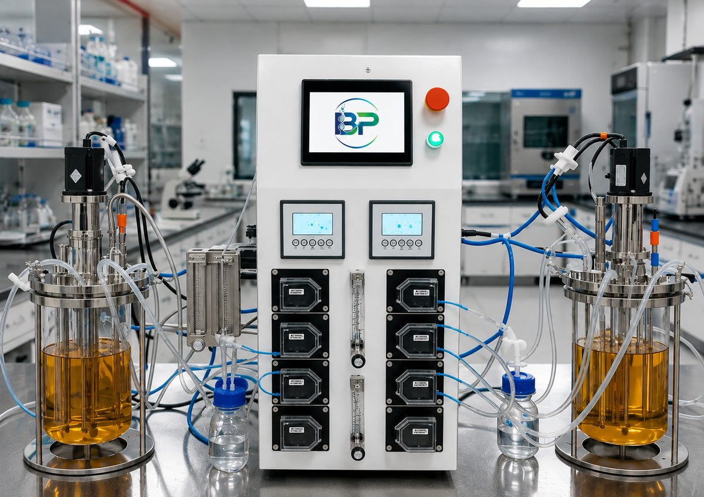
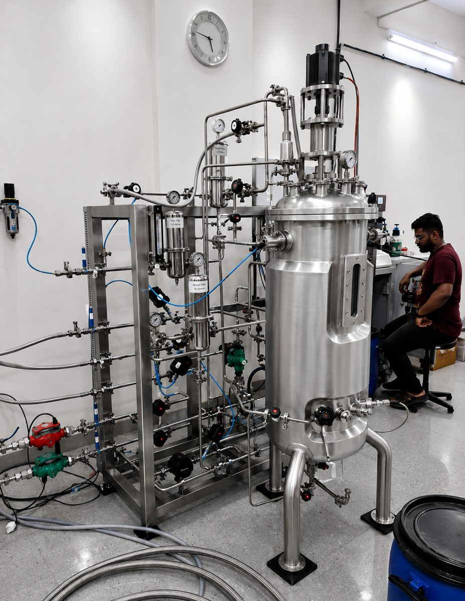
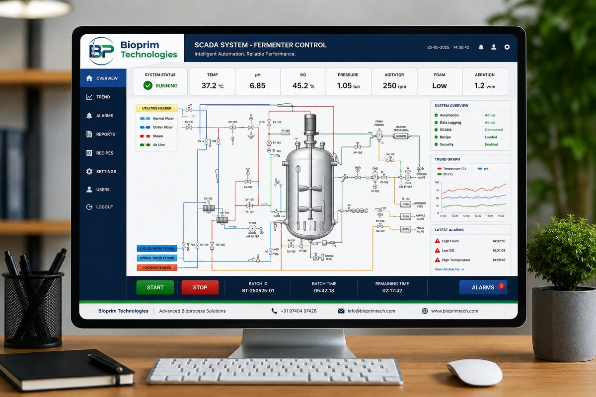

Fermenters, bioreactors & automation, engineered to fit your process
At Bioprim Technologies, we specialize in the design, manufacturing, and automation of high-performance fermenters and bioreactors, engineered to meet the highest standards of quality, precision, and reliability — from 2L research vessels to 5,000L production systems.
Precision Engineering
Tight tolerances and premium materials on every vessel and panel.
Reliable Service & Support
Installation, commissioning, and dependable after-sales service.
Intuitive Touch Interface
7″–15″ HMI screens designed for operators, not engineers only.
Quality Assurance
Built to international standards for performance and durability.
 2L – 10L
2L – 10L
Bioprim-A — Lab Scale Glass Fermenter
SS316L contact parts with borosilicate glass, non-contact SS304. Standalone, Twin & Parallel configurations. Basic, Semi-Automatic & Fully Automatic options.
View specifications →
8–10 vessels · 2L–10L eachBioprim-P — Parallel Glass Fermenter
Centralized 10″–15″ touchscreen HMI enabling simultaneous operation of up to 8–10 vessels for multi-batch process optimization studies.
View specifications →
50L – 5,000LBioprim-I — In-Situ Scale Fermenter
Premium SS316L pilot-to-production scale systems with cascade temperature/pH/DO control and SCADA-based supervisory control.
View specifications →
Siemens PLC · 7″–15″ HMIAutomation & SCADA System
Real-time monitoring, historical trend analysis, batch reports, and intelligent alarm management across every product line.
Explore automation →Not sure which configuration fits your process?
Tell us your capacity, application, and automation needs — we'll help you find the right fit.